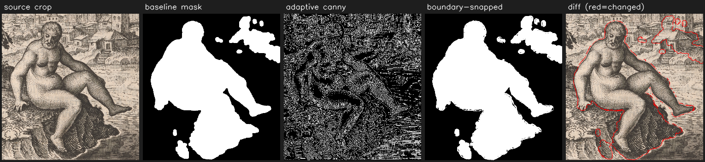
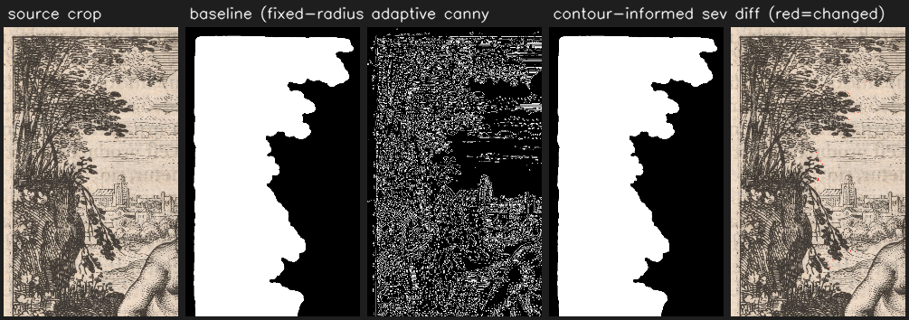
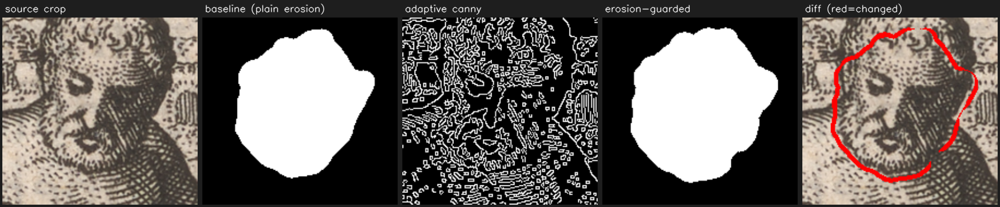
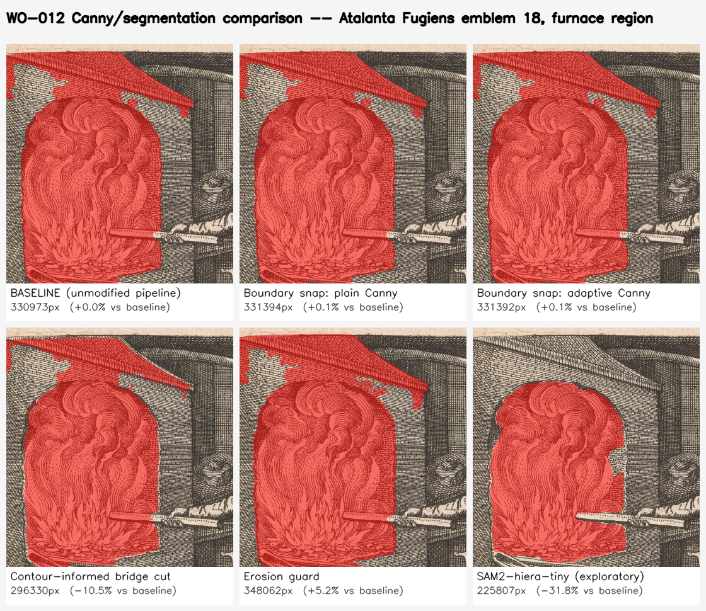
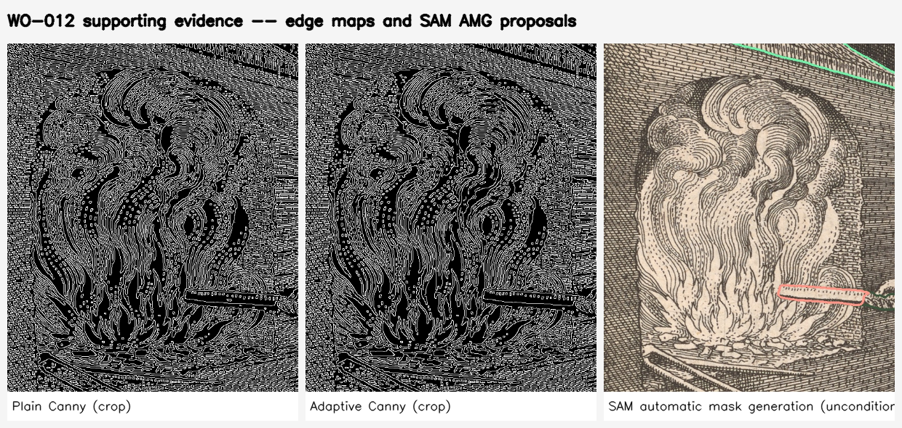

This prototype is the first concrete step in a larger investigation: whether extracted figures from these emblem plates — furnaces, vessels, retorts — can become provenanced evidence for 3dprintlab's parametric apparatus reconstructions, ghosted over a 3D model for silhouette comparison the same way a full plate already can be. Before any of that, the open technical question was narrower: does classical edge detection (Canny) actually improve mask quality on this kind of material, where SAM and GroundingDINO are trained overwhelmingly on natural photographs, not dense woodcut hatching? Two Claude Code sessions ran this experiment independently and in parallel on 2026-08-28, on two different plates, without coordinating — which turned out to be useful: where they agree, that's a more solid signal; where they disagree, the disagreement itself is informative.
Headline finding: the labels were wrong, not the geometry
Before either run could test edge detection meaningfully, both had to pick a real detection to test it on. Both picked entries already labeled as apparatus in the existing catalog. Both found the labels didn't match what the region actually shows.
| Plate | Detector's raw label | Score | What the region actually shows |
|---|---|---|---|
| Emblem XIII | "athanor" | 0.420 | A seated nude river-god figure on a riverbank — no furnace in the plate at all |
| Emblem XIII | "hourglass" | 0.263 | A bearded human head (part of the same figure) |
| Emblem VIII | "furnace" | 0.387 | A cross-hatched vaulted corridor in perspective |
| Emblem XVIII | "philosophical egg" | 0.367 | The furnace/flame opening — correct region, wrong name (this one salvageable by hand-correcting the label) |
| Emblem XVIII | "athanor" | 0.25–0.29 | The standing operator's torso — not apparatus at all |
| Emblem XVIII | "hearth" | 0.303 | Nearly the entire lower half of the plate (floor + vessel + dog) — too coarse to be a usable region |
What this means in practice
Of six apparatus-category detections checked across both runs, only one bounded genuine apparatus — and even that one had the wrong name attached. This is a small, informal sample (not a systematic audit of the corpus), but it's a clean, direct confirmation that GroundingDINO's raw labels for apparatus categories on this corpus cannot be trusted without looking at the actual crop first. No apparatus-labeled entry should be treated as evidence until a human (or at minimum, a second look) has actually verified it depicts what it claims to.
Run A — Emblem XIII, three techniques on three real detections
Three existing detections from Atalanta Fugiens Emblem XIII, each tested against the one
refinement most relevant to its likely failure mode. Baseline is the exact, unmodified
detector → segmenter → postprocessor chain already in production.
Boundary snapping — the seated figure (mislabeled "athanor")

Contour-informed bridge severing — the tree/foliage detection

Erosion guard — the head detection (mislabeled "hourglass")

SAM automatic mask generation (unconditional proposals)
| Technique | Δ vs. baseline | Verdict |
|---|---|---|
| Boundary snapping (plain & adaptive Canny) | +3.4% / IoU 0.954 · both Canny variants agreed (IoU 0.998 between them) | Helped, modestly |
| Contour-informed bridge severing | +0.07% / IoU 0.999 | Inconclusive — wrong test case |
| Erosion guard | +12.5% / IoU 0.889 | Didn't achieve its intended effect |
| SAM AMG | — | Complementary, different granularity |
Run B — Emblem XVIII, the furnace region
A second, independent run picked Emblem XVIII's furnace/flame opening — a genuine, unambiguous furnace (flames, a blow-pipe, a domed hood) — after tracing the mislabeled "philosophical egg" detection back to the correct region by hand. All six variants segment the same bounding box.

| Technique | Δ vs. baseline | Verdict |
|---|---|---|
| Boundary snap — plain Canny | +0.13% | Didn't help |
| Boundary snap — adaptive Canny | +0.13% | Didn't help |
| Contour-informed bridge cut | −10.5% | Helped, partially — visibly trimmed a leak into the roof above the furnace mouth |
| Erosion guard | +5.16% | Unclear — growth looks like noise-following inflation, not a genuine thin-feature rescue |
| SAM2-hiera-tiny (exploratory) | −31.8% | Clearly helped, on this one image — but see caveat below |
SAM2 caveat
facebook/sam2-hiera-tiny loaded with a warning: the
checkpoint is tagged model_type=sam2_video and was force-loaded into the
static-image Sam2Model class. It produced a plausible, well-bounded mask on this
one image — the mask stopped cleanly at the furnace mouth instead of leaking into the
sloped roof — but this is exploratory, not a validated SAM2 integration. The correct
image checkpoint needs confirming before this result can be trusted beyond "worth
investigating further."
Supporting evidence

Full review sheet with detection-by-detection disposition table →
Where the two runs agree, and where they don't
Agree
- Plain vs. adaptive Canny made no real difference in either run, on either plate. The adaptive per-tile thresholding's extra complexity didn't earn its keep on these two scans specifically — both may simply have fairly even illumination. Worth re-testing on a plate with visibly uneven paper tone before ruling it out generally.
- Erosion guard was unclear-to-unhelpful in both runs. Neither run saw it selectively rescue a genuine thin feature; both saw it inflate the mask in a way that reads as following edge noise rather than recovering real linework.
- SAM AMG is complementary, not a replacement, in both runs — it finds real structure the prompt-driven pipeline doesn't ask for (a tight head region in Run A; the vessel silhouette and individual towers in Run B) but also misses regions the prompt-driven approach gets easily (Run B: AMG's coarse grid never found the flame region at all).
Disagree
- Contour-informed bridge severing was a clean no-op in Run A (IoU 0.999) but a real, visible improvement in Run B (−10.5%, trimmed a genuine leak into background). The difference isn't a contradiction — Run A's test detection (foliage) apparently didn't contain the kind of touching-figure bridge the technique targets, while Run B's furnace mask genuinely did leak into the roof above it. The technique's value depends entirely on whether the test case exercises its actual failure mode — a reminder that one negative result on the wrong case says nothing about the technique itself.
- Boundary snapping read as a modest positive in Run A (IoU 0.954, growth traced the drawn silhouette) but essentially flat in Run B (+0.13%). Plausibly because Run B's furnace region already had a tight baseline mask with little slack to snap toward.
See also
3dprintlab has its own writeup of this same investigation, framed around its Judge panel and the five-state evidence model (Source / Machine proposal / Human confirmed / Reconstructed / Generated): t3dy.github.io/3dprinteralchemylab/extraction.html. This page is the CV-pipeline side of the same work — the raw comparison images and the per-technique verdicts live here.
What's next
Neither run produced a verified apparatus candidate ready for WO-013 (the follow-on work order that wires one accepted extraction into 3dprintlab's Judge panel) without a further look — Run A's candidates were mislabeled figures, and Run B's furnace candidate is real but its best-performing variant (SAM2) carries an unresolved checkpoint caveat. The next concrete step is a human decision: pick a disposition for the Emblem XVIII furnace region (keep baseline, adopt the contour-cut variant, or adopt SAM2 pending its caveat), or look for a cleaner candidate elsewhere in the corpus.
GroundingDINO-tiny SAM ViT-Base SAM2-hiera-tiny (exploratory) Canny (plain + adaptive) CPU-only, no paid APIs